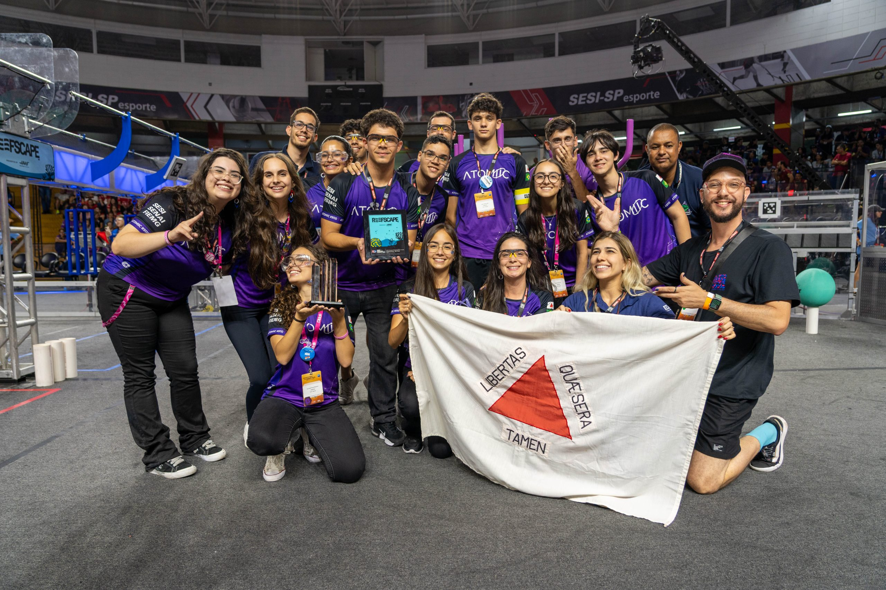

A atomiic é uma turma de de robotica da cidade de São João del Rei que existe desde 2021 porem inicialmente com o nome Squad of Robots, antes de se consolidar como Atomiic. Composta por estudantes do Ensino Médio da escola SESI em São João del-Rei (MG), ela foi criada com o objetivo de competir na modalidade FRC (FIRST Robotics Competition), carregando o título de ser a primeira equipe de FRC do estado de Minas Gerais.
